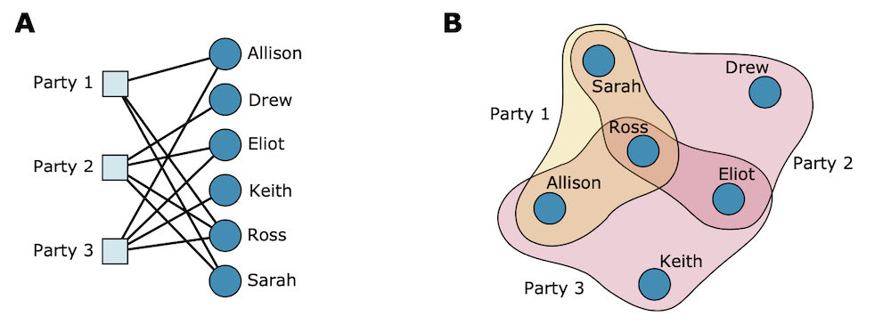
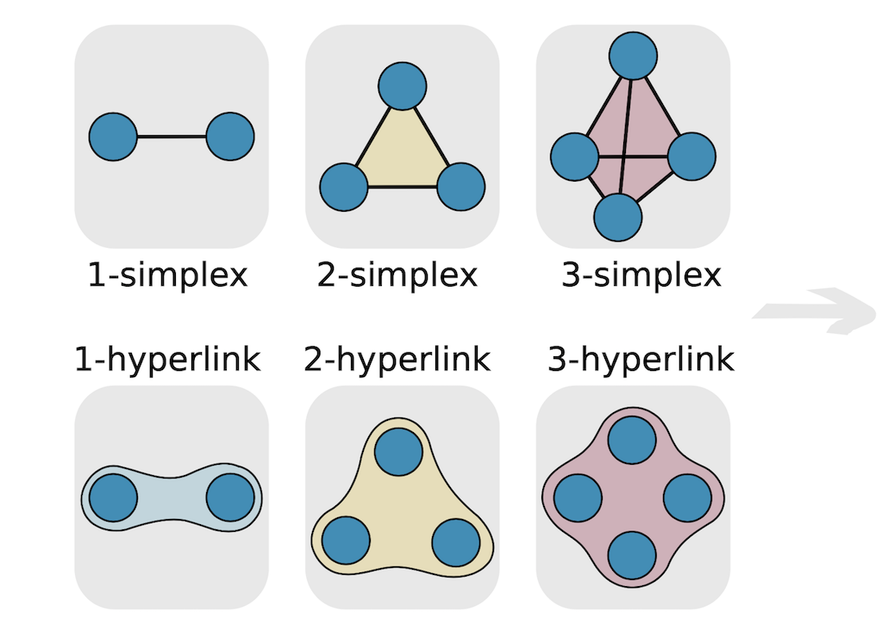

我在准备master thesis的时候，第一个选题是希望利用simplicial complex结合GNN在hypergraph领域做些理论突破。现回顾梳理在GNN中使用simplicial相关理论的研究思路和代表性工作。
本文按照“明确问题——理论方案——实践”结构展开：
- 明确问题：传统的图结构有什么不足，什么是高阶图？
- 理论方案：
- 在高阶图上的解决思路有哪些？
- 用通俗的语言介绍simplicial complex理论
- 其他可能的方案：subgraph
- 实践：简要介绍simplicial complex与neural network结合的代表性研究者/工作
问题：高阶图
GNN是当红的在图结构上进行深度学习的工具，而simplicial complex的引用主要是为了解决高阶图上的深度学习问题。
传统的Graph（图）是由点和边组成的结构。“一条边连接两个端点”，这就局限了传统的图只能直接捕捉pairwise relationship（成对的关系）。举例来说，假设A，B，C是一个学校社交图中的三名学生（看成该图中的三个点），我们把边定义为“好朋友”关系。
我们可以很容易地刻画A和B是好朋友，在A点和B点间连一条边即可，这就是pairwise relationship，涉及两个人。
但是如果我们想描述A，B和C是一个好朋友团体，他们仨总是玩在一起，那该怎么表示？此时的关系涉及三个人，超过了pairwise，有的文章里将其称之为higher-order relationship（高阶的关系）。
利用传统的点-边图结构，会有这么种表示方法，一共连三条边，A和B之间一条，B和C之间一条，A和C之间一条。但其实，这种方法并不能很准确地表示“他们仨这个小团体”，也可以被诠释为，A和B，B和C，A和C互为好朋友，然而A和B在上午玩在一起，B和C在下午玩在一起，A和C却在晚上玩在一起。当然，在这种传统图结构上，人们也想出各种其他的方法来描述这种higher-order relationship，比如引入不同类型的点，引入“好朋友”类型的点，A，B和C三个“人”类型的点（可以用圆形点表示），都和一个“好朋友”类型的点（可以用正方形的点表示）相连，就能表示三个人的团体关系了。（例子可以类比于图1中的A图）这里不过多赘述。
这里我们清楚了了要解决的问题：是希望在包含higher-order relationship高阶图（又叫hypergraph）上搭建神经网络模型。超越成对关系的高阶图其实相当普遍，比如社交网络中的‘群组“概念，生态系统中物种之间的互动关系，化学反应中的多种物质共同作用等。对高阶图感兴趣的读者可以参考一篇综述1. Networks beyond pairwise interactions: structure and dynamics。

理论方案
那么要如何解决这个问题呢？既然问题的根源出在“点-边”这种传统的图结构上，就必须寻求一种新的结构来刻画高阶关系。这里介绍两种具有代表性的新结构：1. hyperedge和2. simplicial complex。也有学者从subgraph的角度切入做研究，我表示好奇，还在观察中。
Hyperedge（超边）
Hyperedge（超边）这种想法非常直观。传统图的限制在哪儿，在边，因为一条边只能有两个端点。Ok，那就打破这种限制，让一条边可以有三个甚至更多的端点，问题不就解决了吗？这样的边就叫做hyperedge（超边）。比如我们想表示Sarah, Ross, Allison都去了Party1这件事，我们就构造一条超边叫做Party1，它包含了三个点Sarah, Ross, Allison。形象的表示出来例如图1中的B，其中黄色的圈就是Party1这条超边，它圈住了三个点sarah, Ross和Allison。
还可以从集合论的角度来理解超边。在传统的无向图定义中，将一条边规定为包含两个点的集合，那么超边就可以定义为不限数量的点的集合。
已有一批学者尝试将超边的概念和GNN结合起来，代表工作有：
2. HGNN: Hypergraph neural networks
5. Hypergraph Convolution and Hypergraph Attention
这些工作的思路主要是沿着图神经网络里的基于谱方法的图卷积（网上很多资源介绍，可参考知乎：从源头探讨GCN的行文思路）分支走，尝试定义Hypergraph上的Laplacian矩阵，进而定义图卷积。
Simplicial complex
另一种理论解决方案呢，则是寻求在数学上已经进行相当长时间的研究，且和我们的问题非常契合的理论工具：simplicial complex。
什么是simplicial complex？
一句话从集合的角度来描述simplicial complex，就是，首先有一个集合，集合里的每个元素叫做vertices（点），这个集合中满足一定性质的子集就叫做simplex。这里一定的性质，是子集封闭，也就是一个simplex的任何一个子集都得是一个simplex，最基本的，一个点是一个simplex。如果你把边看做是包含两个点的子集，那么边就是一种simplex。接着便很容易拓展到包含更多元素的simplex。图2的第一行就展示了什么是simplex，
- 左上角的是边，也就是包含两个点的1-simplex。每一个点都是一个0-simplex
- 中间是包含三个点的2-simplex，其中每一条边都是一个1-simplex。
- 右边是包含四个点的3-simplex，
- 它有四个包含3个点的子集，每一个子集都是一个2-simplex。
- 有6个包含2个点的子集（边），每一个子集都是一个1-simplex
- 有4个包含1个点的子集（也就是一个点），每一个子集都是一个0-simplex
第二行是hyperedge与simplex表示的对比。

这个理论工具乍看很复杂，为什么要使用它呢？
我的理解是，一是hodge laplacian不局限于信号在点与点之间的传播，可以拓展到边与边之间，三角形与三角形之间等等，二是simplicial complex的理论研究成果丰富，应用起来有理论上的保障，能进行有良好定义的数学运算，其中的Hodge Laplacian是graph Laplacian的高阶拓展，而这也正是我们需要的。simplicial complex及hodge laplacian的理论涉及到很多数学知识，可能比较劝退。这里贴出两个偏科普类型的资源，较浅显易懂，感兴趣的小伙伴可以看看。
:+1: Hodge Laplacian on Graphs（虽然很数学，但讲得尽可能浅显）
Hodge Laplacian
将simplicial complex应用于高阶图的关键点就在于Hodge Laplacian。这里对Hodge Laplacian背后的intuition做介绍，尽量少地涉及公式。
首先，Laplacian是什么？
教科书上的定义是：Laplacian是梯度的散度the divergence of the gradient of a function。重点，它是一种散度divergence。散度这个中文看起来可能会比较陌生，想想它的英文divergence, diverge分散，会更容易理解。考虑某种属性（对应到数学语言，就是某个函数），如果一个点倾向于把该属性分散出去，这个点的散度就是positive正的，否则就是负的。这里有个视频YouTube: divergence and curl很形象地描述了散度是什么。Laplacian是什么的散度，它是梯度的散度。梯度又是什么？是Gradient，倾斜度，变化度，表明了一种向周围变化的方向和大小。想象河里的水流，河里某一个点上的梯度就是说，此刻这个点上的水会向哪个方向，以多快的速度进行流动。那么散度，就是把这个点周围很小的范围内的所有的水流都考虑进来，看看这个点到底是个源头（向周围增加水流）还是个sink（吸收周围的水流），又或是块平地（流进的水流和流出的水流一样多）。再推荐一个视频YouTube: Laplacian简要介绍了Laplacian。
一句话总结，Laplacian是一种散度算子，描述一个点上的某种属性（对应到函数f）向周围邻居的分散程度。
那么，什么是Graph Laplacian？
类比过来，这是针对图上的点刻画某种属性（对应到函数f）分散程度divergence的一种算子operator。这篇文章知乎：GNN入门之路给出了详细的公式和推导。这里的intuition有以下要素：
- 针对图上的点
- 某种属性
- 分散程度
- 一种算子
举个例子就很好理解了。假如有一个图，图上有5个点，代表5个幼儿园的小朋友。某种属性是：我给各个小朋友不同数量的巧克力。我的巧克力分配方式就可以看做一个函数，输入一个小朋友，经过我的一番思考，输出一个数字。分散程度，代表了巧克力的分散程度，也就是任给一个小朋友，他手里的巧克力是可能被同伴抢走还是他从同伴手里抢来更多的巧克力。一种算子，就是输入一个小朋友，计算这种分散程度的大小。
假如这五个小朋友叫A, B, C, D, E，我分别给他们1，2，3，4，5颗巧克力。他们不知道别人有多少巧克力，只有和对方见面后（给图上的点之间连边），才知道别人的巧克力数量。如果一个小朋友的巧克力少于对方的巧克力，他就会倾向于抢走对方的巧克力，反之，对方就会想要抢走他的巧克力。这种抢走的意愿程度和巧克力的数量差成正比。
现假设AB，AC，AE，BE，CD和DE见过面。那么A的巧克力分散程度就是(1-2) + (1-3) + (1-5)=-7，同理B是(2-1)+(2-5) = -2, C是(3-1)+(3-4)=1，D是(4-3)+(4-5)=0，E是(5-1)+(5-4)=5。简言之，E的巧克力更可能分散，A更可能聚集巧克力。
这里的计算思路就是站在每一个点的立场上，计算它的属性值和所有的邻居的属性值之间的差异。这就是Graph Laplacian的意义。数学推导后的公式就是$L = D- A$，L是Laplacian矩阵，D是度对角矩阵，A是邻接矩阵。更进一步，对L进行正则化normalize，就和上述“梯度的散度”的数学公式如出一辙了。（graph里的求和和连续的Laplacian里的求导，都可以看成是聚合信息的一种方式。对L进行normalize之后，求和和求导就更类似了。）
为了顺利过渡到Hodge Laplacian，现在从关系矩阵incidence matrix的角度来理解$L$。
关于图Laplacian有个性质是$L = BB^\top = D-A$，这里的$B\in V\times E$是incidence matrix。它的数学定义是：刻画点和边的关系，为边定义了方向，从出发节点到到达节点。行是节点，列是边；项是0，1或-1。一条边的出发节点为1，到达节点为-1。（有的地方也用转置了的定义，差别不大）
我不展开数学公式推理，而是从直观的角度理解$LX=BB^\top X$，还是拿上面小朋友中的A举例，原来的计算方式是A直接看到B，C和E手里有多少巧克力，而现在相当于引入了一个中介：边。A不是直接看到B，而是看到他和B之间有一条边AB，他告诉了AB他手里有多少巧克力。同样的，A告诉了所有他看到的边AC和AE。第一轮是所有点告诉所有与之相连的中介（边），然后每条边都有了自己的汇总信息$B^\top X$。第二轮是所有的边再把汇总后的信息转达给与之相连的点$B(B^\top X)$，比如A又从AB, AC和AE这三条边上获取汇总后的信息，计算出他的分散程度。
至于为什么incidence matrix里要为边定义方向，你可以理解为是一个边对它的两个点的不同“暗号”（编解码方式）。拿一条边AC举例，这条边分别从A和C处收集信息知道A有1个巧克力，C有3个巧克力，AC这条边关注的是差值。假如A对应的是1，C对应的是-1，那么AC汇总后的信息就是1-3=-2。对于这个-2，点A和点C也要以不同的方式来解读，点A用$1*(-2)=-2$，得到它的分散程度是负的，点C则用它的$-1*(-2)=2$，得到正的分散程度。这就是预先规定方向的必要性。
从Graph Laplacian到Hodge Laplacian
先给出Hodge Laplacian的数学定义
$$
L_0 = B_1B_1^\top
$$
$$
L_k = B_k^\top B_k + B_{k+1}B_{k+1}^\top, k = 1,\cdots, K-1
$$
$$
L_K = B_K^\top B_K
$$
这里的$L_k$表示不同度数的simplex对应的Laplacian矩阵，比如$L_0$对应0-simplex（点）也就是传统的Graph Laplacian，$L_1$对应以1-simplex（边）为对象的Laplacian。
$B_k$代表$k$-simplex和$k-1$-simplex之间的incidence matrix。
重点介绍如何理解$L_1$，其他度数的simplex很容易类推。
依然坚持Laplacian的理解要点“一个点的某种属性向周围邻居的分散程度”。这里的“点”，不再局限于图中的点vertices，而是拓展为一个对象unit，比如在超图中，$L_1$表示我们将从边的角度，关注信号是如何在边之间传播的，那这里的unit就是边，而不是vertices。
第二个要点是“中介”的思想。站在边1-simplex的角度上，信号在边与边之间传播，需要哪些中介呢？答案是点0-simplex和三角形2-simplex。
正如信号在点与点之间传播，其实是借助点和点之间相连的边来实现的，点0-simplex和三角形2-simplex是边们1-simplex之间相互连接的方式。一个点在所有以它为端点的边之间建立起了联系，一个三角形2-simplex包含三条边，这三条边之间也因为这个三角形建立起了关系。
- 边通过点之间进行信号传播，又被定义为$L^{down}=B_k^\top B_k$
- 边通过三角形之间进行信号传播，又被定义为$L^{up}=B_{k+1} B_{k+1}^\top$
综上，就是hodge laplacian在边上的定义$L_1$。以此拓展出去，可以得到信号在三角形之间传播的laplacian等等。
Simplicial complex的工作实践
目前在超图领域，simplicial cimplex主要被用于解决以下问题：预测点、边、三角形上的缺失信号，特别是流（边）上的信号。
代表论文有：
- simplicial neural networks
- HodgeNet: Graph Neural Networks for Edge Data
- Random Walks on Simplicial Complexes and the normalized Hodge 1-Laplacian
- Simplicial Closure and higher-order link prediction
- Topological Signal Processing: Making Sense of Data Building on Multiway Relations
我在thesis的准备阶段探索体会是，simplicial complex虽然有很好的理论基础，但仍有相当多的局限性：
- 目前为止，缺少良好定义的任务和数据集
- 从理论上讲，simplicial complex：
- 对数据的“整齐度”要求很大，考察对象为同类型的simplex间的信号传播，比如0-simplex之间，1-simplex之间，2-simplex之间。而这么整齐的数据局限在特定领域中。像社交网络中的群组常常拥有不同的规模。
- 当k很大时，数据量太大。由于simplicial complex对任一子集的封闭要求，假如考察10-simplex之间的信号传播，每一个10-simplex都要求它的$\binom {11} {2}=55$个1-simplex，$\binom {11} {4}=330$个3-simplex必须存在。这在计算量的角度很不友好。
这个领域比较小众。以上分享均为个人见解，欢迎提出讨论和批评指正。
Reference
- Networks beyond pairwise interactions: Structure and dynamics, Battiston, Federico and Cencetti, Giulia and Iacopini, Iacopo and Latora, Vito and Lucas, Maxime and Patania, Alice and Young, Jean-Gabriel and Petri, Giovanni, 2020
- Hypergraph Neural Networks, Yifan Feng, Haoxuan You, Zizhao Zhang, Rongrong Ji, Yue Gao, 2019
- HyperGCN: A New Method For Training Graph Convolutional Networks on Hypergraphs, Naganand Yadati, Madhav Nimishakavi, Prateek Yadav, Vikram Nitin, Anand Louis, Partha Talukdar, NIPS2019
- NHP: Neural Hypergraph Link Prediction, Yadati, Naganand and Nitin, Vikram and Nimishakavi, Madhav and Yadav, Prateek and Louis, Anand and Talukdar, Partha, CIKM2020
- Hypergraph convolution and hypergraph attention, Song Bai, Feihu Zhang , Philip H. S. Torr, 2019
- 知乎：从源头探讨GCN的行文思路
- Encyclopedia: simplicial complex
- YouTube: Simplicial Complexes
- Hodge Laplacian on Graphs, Lek-Heng Lim, 2019
- 知乎：图拉普拉斯矩阵
- YouTube: divergence and curl
- YouTube: Laplacian
- 知乎：GNN入门之路
- Simplicial Neural Networks, Stefania Ebli and Michael Defferrard, Gard Spreemann. CoRR 2020.
- HodgeNet: Graph Neural Networks for Edge Data, T. Mitchell Roddenberry and Santiago Segarra, 2019
- Random Walks on Simplicial Complexes and the normalized Hodge 1-Laplacian, Michael T. Schaub, Austin R. Benson, Paul Horn , Gabor Lippner and Ali Jadbabaie, CoRR2018
- Simplicial Closure and higher-order link prediction, Austin R. Benson, Rediet Abebe, Michael T. Schaub, Ali Jadbabaie, Jon Kleinberg, CoRR2018
- Topological Signal Processing: Making Sense of Data Building on Multiway Relations, Barbarossa, Sergio and Sardellitti, Stefania, IEEE2020